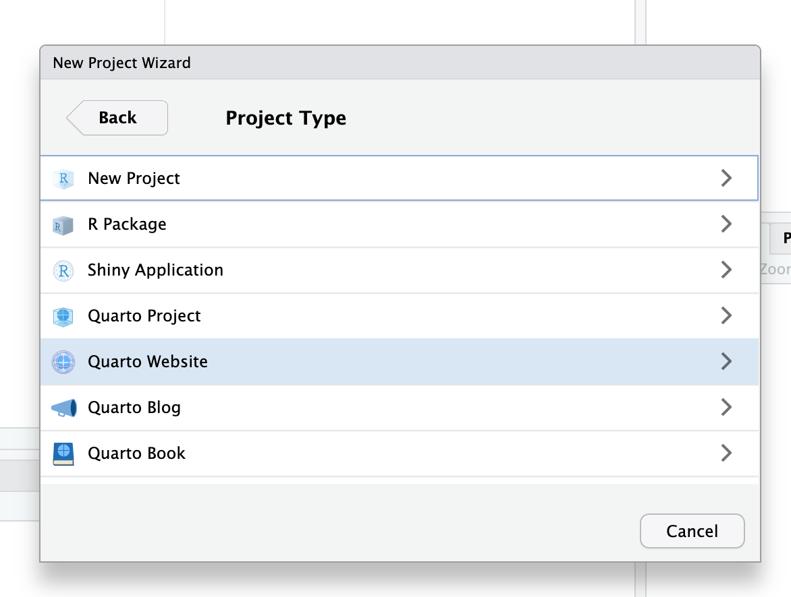

03:00
Creating
basic websites
Anatomy of a
Quarto website
Page Structure
index.qmd
---
title: "My Cool Document"
format: html
---
The `gapminder.csv` dataset contains data from the [**Gapminder foundation**](https://www.gapminder.org/).
```{r}
#| label: fig-neat-plot
library(tidyverse)
library(brand.yml)
df <- read_csv("data/gapminder.csv")
brand <- read_brand_yml("_brand.yml")
ggplot(df, aes(x = gdpPercap, y = lifeExp)) +
geom_point(aes(size = pop, color = continent)) +
scale_x_log10() +
theme_brand_ggplot2("_brand.yml")
```Webpages are like any other Quarto document:
- Start with a YAML header
- Can include code cells
- Everything else is markdown content
Website Structure
A minimal website has two files: index.qmd and _quarto.yml
index.qmd: Renders toindex.html, your home page._quarto.yml: Controls project and website properties.
When rendered you will get a _site/ folder. This contains everything needed to serve the site.
_quarto.yml
Quarto projects
Websites are Quarto projects.
All Quarto projects include a _quarto.yml file.
Quarto projects
A Quarto project is a directory that provides:
- A way to render all or some of the files in a directory with a single command (e.g.
quarto render myproject). - A way to share YAML configuration across multiple documents.
Quarto projects
Not all Quarto projects are websites (though they’re typically website-like).
Creating a project skeleton
File > New Project > New Directory > Quarto Website

Open the Command Palette ( ⌘⇧P | Ctrl + Shift + P)
and start typing “create project”
Creating a project skeleton
Your turn
Create a new website project somewhere on your computer.
You’ll use this as a playground throughout the course.
Open the project in RStudio and explore what the different files look like.
Workflow
Preview
Current page
⌘⇧K
Ctrl + Shift + K
Whole site
Build > Render Website
Requires Quarto Extension for VS Code
Your turn
Open your playground website.
Open
index.qmdand click Render/Preview.Edit the
titleentry inindex.qmd’s YAML metadata to something different and add asubtitleentry. Preview.Add some text to
index.qmd. Preview.Add an R code chunk to
about.qmd. Preview.
05:00
_quarto.yml
_quarto.yml
Configure all site-level settings with _quarto.yml:
Project settings
Project settings
Site settings
Navigation settings
More on this in a bit!
Format settings
Don’t memorize this stuff!
Your turn
Edit your
_quarto.ymlto make the following changes:- Change the preview port to 5555
- Enable a cookie consent dialog
- Add a site description
Bonus tasks!
- Add a footer that says “© 2025, Myself”
- Add an announcement bar that says something
Advice:
- Don’t try to make all these changes at once! Remember the workflow: edit, save, preview, repeat.
- Use the documentation at Quarto.org > Reference > Websites
07:00
Answer
Answer
Navigation
Top navigation
Add new page
Entry titles
- Use
href+textto control the link title - Use the
.qmdfilename to use that page’s title as the link title
Icons
Dropdowns
Don’t memorize this stuff!
Your turn
Create a new file named
contact.qmdand paste the content fromabout.qmdinto it. Then change it to something else.Add
contact.qmdto the left section of your top navigation bar.Add a right section to the navigation bar with icon-based links to a few other websites.
Bonus task! Create a dropdown menu in the top navigation bar, either with links to other websites or links to some new
.qmdpages that you create.
Advice:
- Don’t try to make all these changes at once! Remember the workflow: edit, save, preview, repeat.
- Use the documentation at Quarto.org > Guide > Websites > Website Navigation
07:00
Answer
Answer
Side navigation

Side navigation and sections

Side navigation and other settings
Automatic sidebar
Hybrid navigation
Have a different sidebar for different sections!
_quarto.yml
Don’t memorize this stuff!
Your turn
Create a folder named
researchand create these files in there:index.qmd,project1.qmd,project2.qmd, andproject3.qmdAdd an entry for
research/index.qmdin your top navigation barMake a sidebar that only appears on the research page that contains links to
index.qmd,project1.qmd,project2.qmd, andproject3.qmd
Advice:
- Don’t try to make all these changes at once! Remember the workflow: edit, save, preview, repeat.
- Use the documentation at Quarto.org > Guide > Websites > Website Navigation
07:00
Answer
Answer
Special pages
YAML-based page settings
Some page types are based on special templates that use information from the YAML metadata.
Two main built-in special page types:
- Listing pages
- About pages
(you can make your own special templates too!)
Listing pages
More about these in the advanced section!

Documentation: https://quarto.org/docs/websites/website-listings.html
About pages
about.qmd
---
title: "Ada Lovelace"
about:
template: solana
image: img/ada-lovelace.jpg
links:
- icon: wikipedia
text: Wikipedia
href: https://en.wikipedia.org/wiki/Ada_Lovelace
toc: false
---
## Background
Augusta Ada King, Countess of Lovelace (née Byron; 10 December 1815 – 27 November 1852), also known as Ada Lovelace, was an English mathematician and writer chiefly known for her work on Charles Babbage's proposed mechanical general-purpose computer, the Analytical Engine. She was the first to recognise that the machine had applications beyond pure calculation. Ada Lovelace is sometimes considered to be the first computer programmer.Documentation: https://quarto.org/docs/websites/website-about.html
Don’t memorize this stuff!
Your turn
Create a basic About page for either yourself or some fictional person.
- Find an image on your computer or from the internet and add it to your project, either in the root of project, or (better!) in a folder just for images, like
img/ - Add links to different websites (with icons!)
- Try different
templateoptions - Try different
image-shapeoptions
- Find an image on your computer or from the internet and add it to your project, either in the root of project, or (better!) in a folder just for images, like
Advice:
- Don’t try to make all these changes at once! Remember the workflow: edit, save, preview, repeat.
- Use the documentation at Quarto.org > Guide > Websites > About Pages
07:00
What’s next?
Course outline
- ✅
Intro to Quarto - ✅
Creating basic websites - Advanced website features
- Publishing
- Customization and branding
- Interactivity